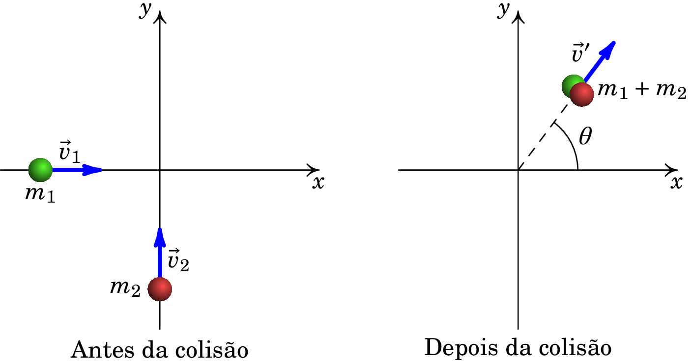
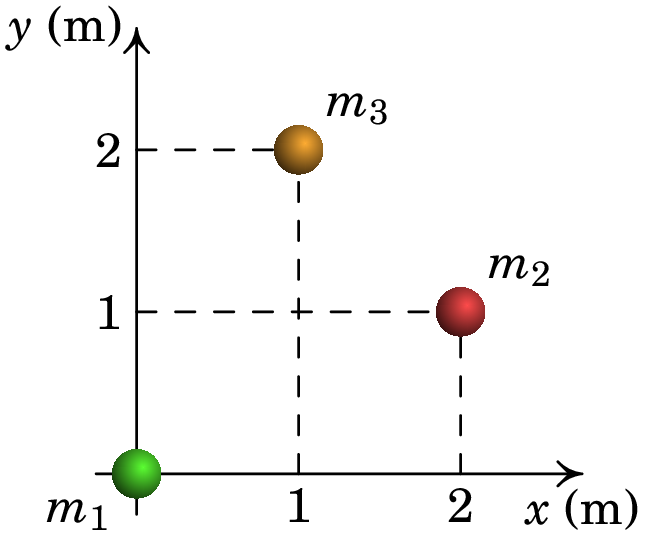

Jaime E. Villate. Topics of Mechanics,
University of Porto, Portugal, 2025.
1. Um corpo A, de massa kg, move-se com velocidade de valor m/s paralelamente ao eixo dos , no sentido positivo, quando colide com um corpo B, de massa kg, inicialmente em repouso. Após a colisão, o valor da velocidade do corpo A é m/s na direção que forma um ângulo de 30° com a direção inicial. Determine a velocidade final do corpo B. .
2. Considere-se o seguinte esquema: Duas partículas de massas kg e kg colidem, no plano horizontal, permanecendo juntas após a colisão. Antes da colisão, a partícula 1 movia-se de oeste para este com velocidade de valor 6 km/h e a partícula 2 movia-se de sul para norte com velocidade de valor 8 km/h.
3. A figura seguinte mostra um sistema de três partículas, de massas kg, kg e kg.
4. Uma bola de 0.70 kg move-se horizontalmente a 5.0 m/s quando choca contra uma parede vertical e ricocheteia com rapidez 2.0 m/s. Qual o módulo da variação da quantidade de movimento da bola? 4.9 kg·m/s.
5. Um balde de 4.0 kg desliza sobre uma superfície horizontal sem atrito quando explode em dois fragmentos de 2.0 kg. Um destes move-se para norte a 3.0 m/s e o outro 30° a norte do leste a 5.0 m/s. Qual era a velocidade do balde antes da explosão? 3.5 m/s.